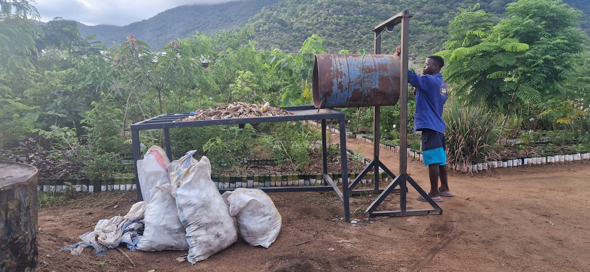
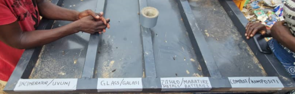

Waste Sorting Table and Lift

In an effort to improve the waste management practices at Cape Maclear and optimize waste processing ahead of incineration, a waste sorting table and a manually operated lift were implemented. These constructions aimed to facilitate proper waste segregation, enhance operational efficiency, and reduce worker fatigue, ultimately contributing to a more structured and sustainable waste management system.
1 Waste sorting table
The waste sorting table was designed to provide a systematic approach to separating waste before incineration. The table was built from locally available metal, ensuring long-term usability and resilience in field conditions. It consists of:
- A flat surface with incline to facilitate the movement of waste towards designated sorting bins.
- Four categorized sections of the following types:
- Waste for incineration (materials suitable for burning).
- Glass (set aside for proper disposal).
- Batteries (collected separately due to hazardous material handling regulations).
- Compost (organic waste segregated for decomposition and soil enrichment).
With integration of the table in the waste management workflow the workers could more efficiently categorize waste before disposal, reducing non-combustible material within the incinerated waste, improving burning efficiency, and minimizing emissions.

2 Trash bin lift
To assist in lifting and loading waste onto the sorting table, a manually operated pulley system on a frame was developed. Given the financial and infrastructure limitations, the design used readily available components and simple mechanical principles:
- Pulley System mounted on a 2 m-high frame, allowing for vertical lifting of waste bins.
- Rope Mechanism: sourced from local fishermen, strong and durable rope was used to lift the bins.
- Tilting function: the bin, when lifted, tilted forward to empty its contents onto the sorting table without requiring heavy manual lifting.
This lifting mechanism lifting mechanism significantly reduces physical strain on workers and streamlines the waste processing workflow, making it easier and more efficient to transfer waste from collection bins to the sorting table, incentivizing waste separation.
3 Costs
To ensure consistency across reporting, all the cost calculations were converted from MWK to USD with an exchange rate of 2,000 MWK/USD.
| Category | Details | Price (MWK) | Price (USD) |
|---|---|---|---|
| Metal plates | 2 plates: 120 cm × 210 cm | 505,000 | 252.50 |
| Square profiles | 2 profiles: 40 mm × 40 mm, 1.6 mm, 6 m | 100,000 | 50.00 |
| Angle profile | 1 profile: 50 mm × 50 mm, 6 m | 20,000 | 10.00 |
| Welding | - | 100,000 | 50.00 |
| Total | - | 725,000 | 362.50 |
| Category | Details | Price (MWK) | Price (USD) |
|---|---|---|---|
| Rope | 5 m | 20,000 | 10.00 |
| Angle profiles | 3 profiles: 50 mm × 50 mm, 6 m | 50,000 | 25.00 |
| Square profiles | 2 profiles: 40 mm × 40 mm, 1.6 mm, 6 m | 278,000 | 139.00 |
| Gate Tyre | - | 27,500 | 13.75 |
| Welding | - | 100,000 | 50.00 |
| Total | - | 475,500 | 237.75 |
4 Operation
To ensure smooth and efficient waste processing, the following operational steps should be followed:
- Waste collection & transport
- Waste is collected from designated bins placed around the village and transported to the sorting table.
- Lifting waste using the lift
- The worker secures the waste bin using the rope and the pulley system.
- By pulling the opposite end of the rope, the bin is lifted and tilted forward, allowing its contents to be emptied onto the sorting table.
- The bin is lowered and placed back in its designated area.
- Sorting process
- Workers manually separate waste into the designated categories.
- Final waste disposal: properly sorted incinerable waste is transferred to the incinerator for burning, while the non-combustible and recyclable materials are stored appropriately for future disposal and/or reuse.
5 Impact and Performance Evaluation
The introduction of the waste sorting table and lifting mechanism results in multiple benefits, both operational and environmental:
- Increased sorting accuracy: proper segregation of waste improved combustion efficiency by reducing the presence of non-combustible materials.
- Reduction in air pollution: by ensuring only suitable materials are incinerated, emissions from burning are significantly reduced.
- Enhanced worker safety and efficiency: the lifting mechanism minimizes heavy lifting, reducing the risk of injuries and making waste handling more manageable.
- Cleaner waste processing environment: the structured approach to waste sorting created a more organized and hygienic waste disposal area.